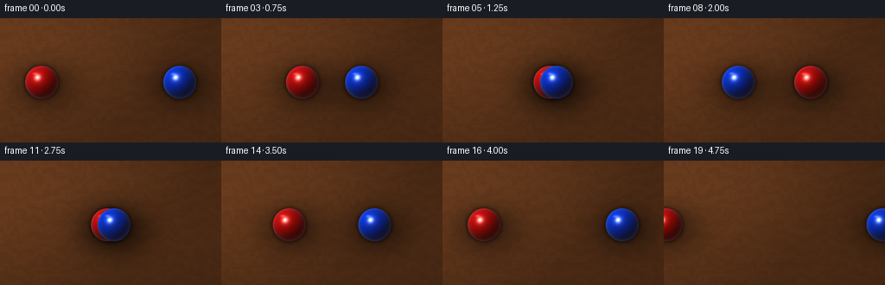
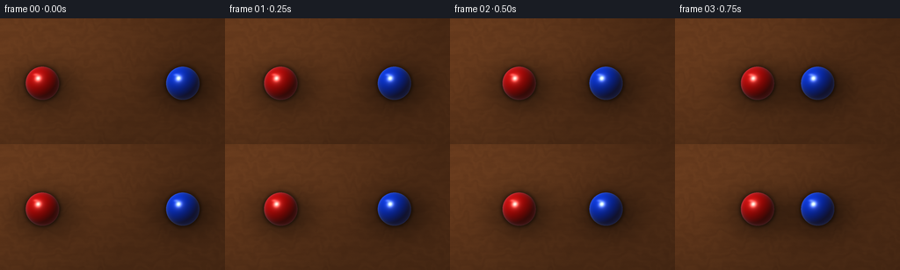
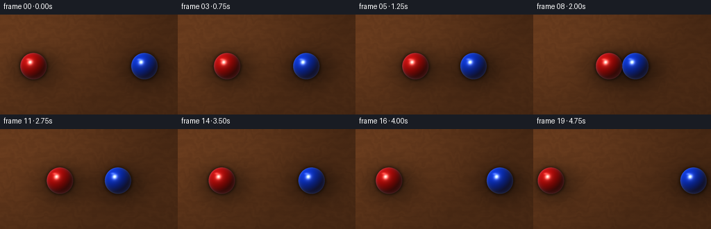
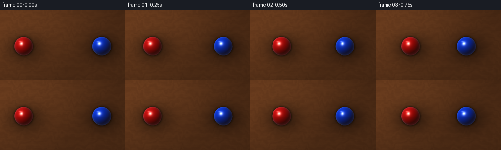

CODING AGENTS AS PIXEL WORLD MODELS
traex/DeepSeek-V4.1-Flash · instance_preservation_0025
点击播放 · 原生 RGB 像素
逐轮保存的候选
回放视频、检查图与代码变化。
每份候选均可单独播放。实际图片检查记录在下方工具轨迹中。
候选 01播放与检查图
点击播放 · 原生 RGB 像素


展开代码变化
--- 上一保存版本 +++ 本次保存版本 @@ -0,0 +1,201 @@ +"""Procedural top-down tabletop collision rendered with numpy and Pillow.""" + +from pathlib import Path +import math + +import numpy as np +from PIL import Image + +import artifact_io + + +CASE_DIR = Path(__file__).resolve().parent +OUT_W, OUT_H = 256, 144 +SS = 4 +W, H = OUT_W * SS, OUT_H * SS +N_FRAMES = 20 +FPS = 4.0 + + +def _resized_noise(rng, shape, out_shape): + """Small random field upscaled with cubic interpolation.""" + field = rng.random(shape, dtype=np.float32) + image = Image.fromarray(np.clip(field * 255, 0, 255).astype(np.uint8)) + image = image.resize((out_shape[1], out_shape[0]), Image.Resampling.BICUBIC) + return np.asarray(image, dtype=np.float32) / 255.0 + + +def make_table(): + """Build a warm oak surface with elongated grain and a soft studio falloff.""" + rng = np.random.default_rng(1847) + y, x = np.mgrid[0:H, 0:W].astype(np.float32) + u = x / W + v = y / H + + broad = _resized_noise(rng, (18, 48), (H, W)) + fine = _resized_noise(rng, (64, 24), (H, W)) + fibers = _resized_noise(rng, (192, 12), (H, W)) + + # Long horizontal grain, warped gently by the two larger noise fields. + warp = ( + 0.52 * np.sin(2.0 * math.pi * (2.1 * u + 0.42 * v + 0.35 * broad)) + + 0.24 * np.sin(2.0 * math.pi * (5.2 * u - 1.1 * v + 0.22 * fine)) + + 0.10 * np.sin(2.0 * math.pi * (13.0 * u + 2.3 * v)) + ) + grain = np.sin(2.0 * math.pi * (8.5 * v + warp)) + narrow = np.sin(2.0 * math.pi * (29.0 * v + 0.7 * warp + 0.22 * fibers)) + pore = np.sin(2.0 * math.pi * (76.0 * v + 0.36 * fine + 0.18 * fibers)) + + tone = ( + 0.50 + + 0.090 * grain + + 0.025 * narrow + + 0.010 * pore + + 0.075 * (broad - 0.5) + + 0.022 * (fine - 0.5) + ) + + # Oak palette, with subtle board-to-board warmth variation. + board_tone = 0.012 * np.sin(2.0 * math.pi * (0.38 * v + 0.11)) + r = 0.335 + 0.105 * tone + board_tone + g = 0.183 + 0.073 * tone + 0.45 * board_tone + b = 0.087 + 0.042 * tone + 0.18 * board_tone + + # Broad upper-left illumination and restrained edge falloff. + key = np.clip(0.94 - 0.34 * (u - 0.22) - 0.17 * (v - 0.20), 0.72, 1.08) + edge = np.sqrt(((u - 0.48) / 0.74) ** 2 + ((v - 0.50) / 0.78) ** 2) + vignette = np.clip(1.035 - 0.105 * edge ** 2.2, 0.88, 1.035) + sheen = 0.016 * np.exp(-((u - 0.28) ** 2 / 0.14 + (v - 0.18) ** 2 / 0.08)) + light = key * vignette + + table = np.stack((r, g, b), axis=2) * light[..., None] + table += sheen[..., None] * np.array([0.95, 0.70, 0.46], dtype=np.float32) + + # Fine finish speckle keeps the surface from looking mathematically flat. + speckle = _resized_noise(rng, (H // 2, W // 2), (H, W)) + table *= (0.985 + 0.030 * speckle)[..., None] + return np.clip(table, 0.0, 1.0) + + +TABLE = make_table() +YY, XX = np.mgrid[0:H, 0:W].astype(np.float32) + + +def sphere_center(frame): + """Equal-mass collision at frame 8, followed by exchanged velocities.""" + y = 0.515 * H + start_red = 0.188 * W + start_blue = 0.812 * W + radius = 19.0 * SS + speed = (start_blue - start_red - 2.0 * radius) / 8.0 + collision_red = start_red + speed * 8.0 + collision_blue = start_blue - speed * 8.0 + if frame <= 8: + return ( + start_red + speed * frame, + y, + start_blue - speed * frame, + y, + radius, + ) + post = frame - 8.0 + return ( + collision_red - speed * post, + y, + collision_blue + speed * post, + y, + radius, + ) + + +def shade_ball(frame_rgb, cx, cy, radius, albedo, phase): + dx = (XX - cx) / radius + dy = (YY - cy) / radius + rr = dx * dx + dy * dy + inside = rr <= 1.0 + if not np.any(inside): + return + + nz = np.sqrt(np.maximum(0.0, 1.0 - rr)) + light = np.array([-0.47, -0.55, 0.69], dtype=np.float32) + light /= np.linalg.norm(light) + diffuse = np.clip(dx * light[0] + dy * light[1] + nz * light[2], 0.0, 1.0) + wrapped = np.clip((diffuse + 0.18) / 1.18, 0.0, 1.0) + + half = light + np.array([0.0, 0.0, 1.0], dtype=np.float32) + half /= np.linalg.norm(half) + spec_dot = np.clip(dx * half[0] + dy * half[1] + nz * half[2], 0.0, 1.0) + specular = 0.82 * spec_dot ** 72 + 0.18 * spec_dot ** 18 + + fresnel = (1.0 - nz) ** 2.1 + rim = fresnel * (0.11 + 0.18 * np.clip(0.55 - 0.4 * dx - 0.2 * dy, 0.0, 1.0)) + warm_bounce = (1.0 - diffuse)[..., None] * np.array( + [0.055, 0.026, 0.013], dtype=np.float32 + ) + + base = np.asarray(albedo, dtype=np.float32) + color = base[None, None, :] * (0.105 + 0.88 * wrapped[..., None] ** 1.25) + color += warm_bounce + color += specular[..., None] * np.array([1.0, 0.97, 0.92], dtype=np.float32) + color += rim[..., None] * np.array([0.72, 0.82, 1.0], dtype=np.float32) + + # A faint, moving studio reflection adds material depth without obscuring the hue. + glint_y = cy - 0.52 * radius + 0.018 * radius * math.sin(phase) + glint = np.exp(-(((XX - (cx - 0.40 * radius)) / (0.14 * radius)) ** 2 + + ((YY - glint_y) / (0.075 * radius)) ** 2)) + color += (0.24 * glint)[..., None] * np.array([1.0, 0.98, 0.94], dtype=np.float32) + + frame_rgb[inside] = color[inside] + + +def add_contact_shadow(frame_rgb, cx, cy, radius): + # Soft key-light shadow, displaced down-right from the sphere. + sx = cx + 0.20 * radius + sy = cy + 0.27 * radius + broad = np.exp( + -0.5 * (((XX - sx) / (1.28 * radius)) ** 2 + ((YY - sy) / (0.95 * radius)) ** 2) + ) + # Tight ambient-occlusion ring under the edge. + rho = np.sqrt((XX - cx) ** 2 + (YY - cy) ** 2) + ring = np.exp(-0.5 * ((rho - 0.99 * radius) / (0.115 * radius)) ** 2) + ring *= (rho >= 0.91 * radius).astype(np.float32) + shade = 1.0 - 0.43 * broad - 0.25 * ring + frame_rgb *= np.clip(shade, 0.30, 1.0)[..., None] + + +def render_frame(frame): + image = TABLE.copy() + red_x, red_y, blue_x, blue_y, radius = sphere_center(frame) + add_contact_shadow(image, red_x, red_y, radius) + add_contact_shadow(image, blue_x, blue_y, radius) + shade_ball( + image, + red_x, + red_y, + radius, + albedo=(0.77, 0.030, 0.021), + phase=frame * 0.31, + ) + shade_ball( + image, + blue_x, + blue_y, + radius, + albedo=(0.018, 0.19, 0.82), + phase=frame * 0.31 + 1.7, + ) + return image + + +def main(): + frames = [] + for frame_index in range(N_FRAMES): + high_res = render_frame(frame_index) + image = Image.fromarray(np.clip(high_res * 255.0, 0, 255).astype(np.uint8), "RGB") + image = image.resize((OUT_W, OUT_H), Image.Resampling.LANCZOS) + frames.append(np.asarray(image, dtype=np.uint8)) + artifact_io.save(np.stack(frames), CASE_DIR) + + +if __name__ == "__main__": + main()
候选 02播放与检查图
点击播放 · 原生 RGB 像素


展开代码变化
--- 上一保存版本
+++ 本次保存版本
@@ -87,7 +87,7 @@
start_red = 0.188 * W
start_blue = 0.812 * W
radius = 19.0 * SS
- speed = (start_blue - start_red - 2.0 * radius) / 8.0
+ speed = (start_blue - start_red - 2.0 * radius) / 16.0
collision_red = start_red + speed * 8.0
collision_blue = start_blue - speed * 8.0
if frame <= 8:
可观测工具轨迹
实际执行的命令与返回图片。
命令 1exit 0
/bin/bash -c "pwd && rg --files -g 'prompt.txt' -g 'GENERATION_RULES.md' -g 'task_spec.json' -g '"'!node_modules'"'"
命令 2exit 0
/bin/bash -c 'git status --short && ls -la'
命令 3exit 0
/bin/bash -c 'cat prompt.txt'
命令 4exit 0
/bin/bash -c 'cat GENERATION_RULES.md'
命令 5exit 0
/bin/bash -c 'cat task_spec.json'
命令 6exit 0
/bin/bash -c "sed -n '1,240p' artifact_io.py && sed -n '1,220p' player_template.html"
命令 7exit 0
/bin/bash -c "python - <<'PY'
import importlib.util
for name in ['numpy','PIL','scipy','cv2','imageio','matplotlib']:
print(name, bool(importlib.util.find_spec(name)))
PY"命令 8exit 0
/bin/bash -c "find . -maxdepth 2 -type f -printf '%p %s bytes\\n' | sort"
命令 9exit 1
/bin/bash -c 'python generate.py'
命令 10exit 0
/bin/bash -c 'python generate.py'
命令 11exit 0
/bin/bash -c 'ls -lh generate.py pixels.npz inspection.png transition_check.png index.html && find frames -maxdepth 1 -type f | wc -l'
命令 12exit 0
/bin/bash -c "python - <<'PY'
from PIL import Image
import numpy as np
im=np.asarray(Image.open('inspection.png'))
print('inspection', im.shape, 'mean', np.round(im.mean((0,1)),1), 'range', im.min(), im.max())
for i in [0,4,8,12,16,19]:
a=np.asarray(Image.open(f'frames/{i:02d}.png'))
print(i, a.shape, a.dtype, np.round(a.mean((0,1)),1), a.min(), a.max())
PY"命令 13exit 0
/bin/bash -c "python - <<'PY'
from PIL import Image
im=Image.open('inspection.png')
im.crop((0,0,768,330)).resize((1536,660),Image.Resampling.NEAREST).save('.tmp/inspect_zoom.png')
PY"命令 14exit 0
/bin/bash -c "python - <<'PY'
from PIL import Image
import numpy as np
for i in range(20):
a=np.asarray(Image.open(f'frames/{i:02d}.png')).astype(float)
# saturated colored pixels
red=(a[:,:,0]>90)&(a[:,:,0]>1.8*a[:,:,1])&(a[:,:,0]>1.5*a[:,:,2])
blue=(a[:,:,2]>80)&(a[:,:,2]>1.4*a[:,:,0])&(a[:,:,2]>1.15*a[:,:,1])
def c(m):
ys,xs=np.where(m)
return (round(xs.mean(),1),round(ys.mean(),1),len(xs)) if len(xs) else None
print(f'{i:02d}', 'R',c(red),'B',c(blue))
PY"命令 15exit 0
/bin/bash -c 'mkdir -p .tmp/candidate_01 && cp -r frames pixels.npz inspection.png transition_check.png index.html .tmp/candidate_01/'
命令 16exit 0
/bin/bash -c 'python generate.py'
命令 17exit 0
/bin/bash -c "python - <<'PY'
from PIL import Image
import numpy as np
for i in range(20):
a=np.asarray(Image.open(f'frames/{i:02d}.png')).astype(float)
red=(a[:,:,0]>90)&(a[:,:,0]>1.8*a[:,:,1])&(a[:,:,0]>1.5*a[:,:,2])
blue=(a[:,:,2]>80)&(a[:,:,2]>1.4*a[:,:,0])&(a[:,:,2]>1.15*a[:,:,1])
def c(m):
ys,xs=np.where(m)
return (round(float(xs.mean()),1),round(float(ys.mean()),1),len(xs)) if len(xs) else None
print(f'{i:02d}', 'R',c(red),'B',c(blue))
PY"命令 18exit 0
/bin/bash -c 'command -v ffmpeg || true'
命令 19exit 1
/bin/bash -c "python - <<'PY'
import json, numpy as np
from pathlib import Path
from PIL import Image
p=np.load('pixels.npz')['pixels']
print('pixels',p.shape,p.dtype,'unique frames',len(np.unique(p,axis=2)))
assert p.shape==(144,256,20)
frames=np.stack([np.asarray(Image.open(f'frames/{i:02d}.png')) for i in range(20)])
assert frames.shape==(20,144,256,3) and frames.dtype==np.uint8
assert np.array_equal(frames[:,:, :, 0].transpose(1,2,0) << 16 | frames[:,:, :, 1].transpose(1,2,0) << 8 | frames[:,:, :, 2].transpose(1,2,0), p)
print('pixel tensor matches PNG frames')
h=Path('index.html').read_text()
print('html',len(h),'player-ready marker', 'window.__pixelReady=true' in h, 'caption present', 'wooden table' in h)
PY"命令 20exit 1
/bin/bash -c "python - <<'PY'
import numpy as np
from pathlib import Path
from PIL import Image
p=np.load('pixels.npz')['pixels']
frames=np.stack([np.asarray(Image.open(f'frames/{i:02d}.png')) for i in range(20)]).astype(np.uint32)
print('shapes',frames.shape,p.shape)
rebuilt=(frames[...,0]<<16)|(frames[...,1]<<8)|frames[...,2]
print('rebuilt shape',rebuilt.shape)
for i in range(20):
q=rebuilt[i].T
if not np.array_equal(q,p[:,:,i]):
print('mismatch frame',i,'pixels',np.count_nonzero(q"'!=p[:,:,i]))
print('"'png/tensor equality',all(np.array_equal(rebuilt[i].T,p[:,:,i]) for i in range(20)))
h=Path('index.html').read_text()
print('html bytes',len(h),'ready', 'window.__pixelReady=true' in h, 'caption', 'wooden table' in h)
PY"命令 21exit 0
/bin/bash -c "python - <<'PY'
import numpy as np
from pathlib import Path
from PIL import Image
p=np.load('pixels.npz')['pixels']
frames=np.stack([np.asarray(Image.open(f'frames/{i:02d}.png')) for i in range(20)]).astype(np.uint32)
rebuilt=(frames[...,0]<<16)|(frames[...,1]<<8)|frames[...,2]
checks=[np.array_equal(rebuilt[i],p[:,:,i]) for i in range(20)]
print('png/tensor equality',all(checks),checks)
h=Path('index.html').read_text()
print('html bytes',len(h),'ready', 'window.__pixelReady=true' in h, 'caption', 'wooden table' in h)
PY"保存候选 2 份；完成命令 21 次；可验证图片返回 0 张。原始 API 响应与完整日志保留在本地。